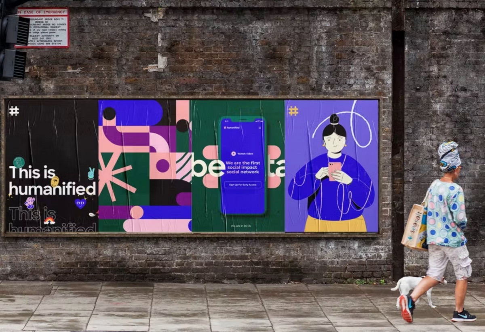
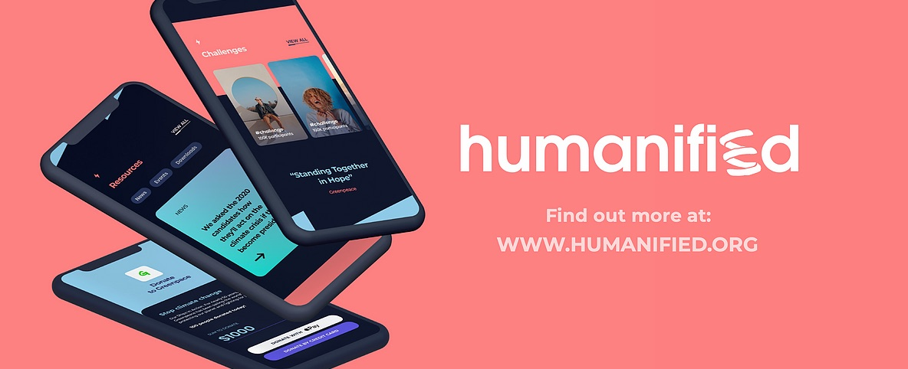
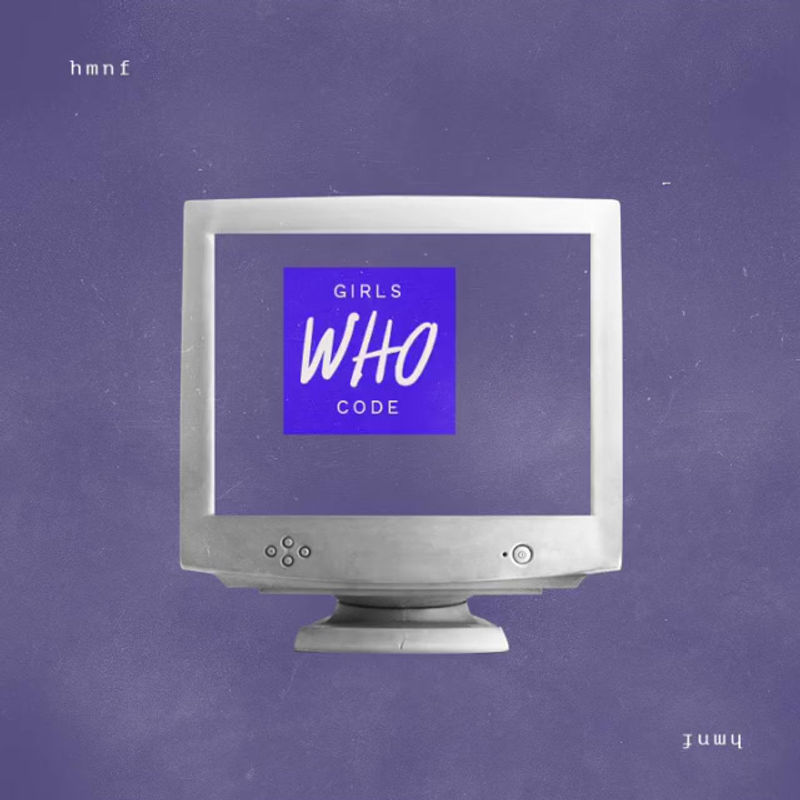
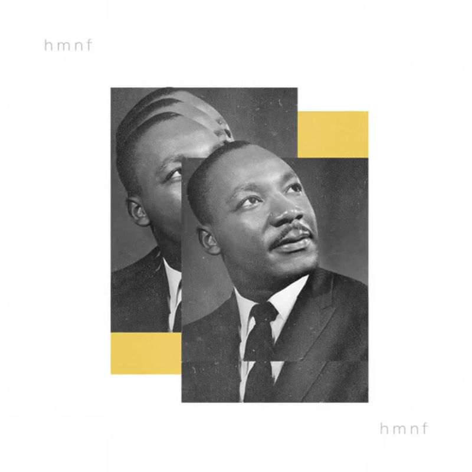
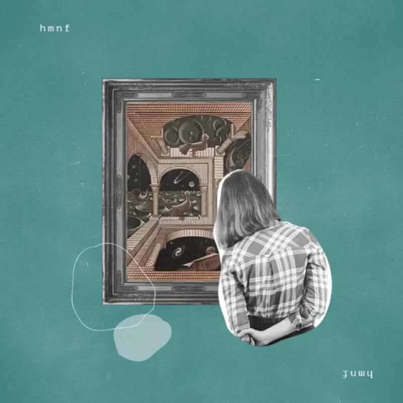

As Digital Media Director on Humanified's founding team, shaping the investor pitch, the product direction, and the content strategy meant to bring it to life.
A pre-launch startup needed a founding-team-level contributor who could help pitch investors, shape the product, and build a content engine, all before a single user existed.
Sat on the founding team as Digital Media Director: contributed to the investor deck, product direction, brand copywriting, and the social strategy meant to drive Beta signups.
A complete investor-ready pitch deck and launch-ready brand and content system, built from zero for an app that didn't exist yet.
The figures above are from the investor pitch deck itself (market sizing and business projections), not achieved results, Humanified was a pre-launch venture.
Humanified set out to be the first content-based social impact platform, a place for people to create and complete challenges for good, donate, and see their impact in real time. It was conceived in 2020, against the backdrop of COVID-19, when the pitch deck cited over a billion people worldwide in quarantine and looking for ways to help.
Developed by Raxo, the New York agency, Humanified needed more than a product idea. It needed a founding team that could credibly pitch investors, define what the app would actually be, and build the brand and content strategy that would carry it from Beta to real users, all at once, before launch.
As Digital Media Director, the role sat across four parts of getting Humanified off the ground:
The work produced a complete, investor-facing pitch deck grounded in real market data (a 3.8B-user global social media market, $410B given to U.S. charities in 2017) and a credible go-to-market plan, alongside a launch-ready brand identity and content system built for a product that didn't exist yet. Humanified is a reminder that not every result is a growth chart: sometimes the outcome is a founding team's shared conviction that an idea is worth building, backed by the strategy to actually launch it.
A note on these: Humanified's content lived as short-form video and animated posts. The originals aren't hosted as playable files anywhere accessible, only their static cover art survived, so what's shown below are the real thumbnails and launch creative, not the videos themselves.
The app-launch billboard and product/logo creative used to introduce Humanified.


Storytelling posts built around key dates and social causes, part of the Beta-launch content strategy.


